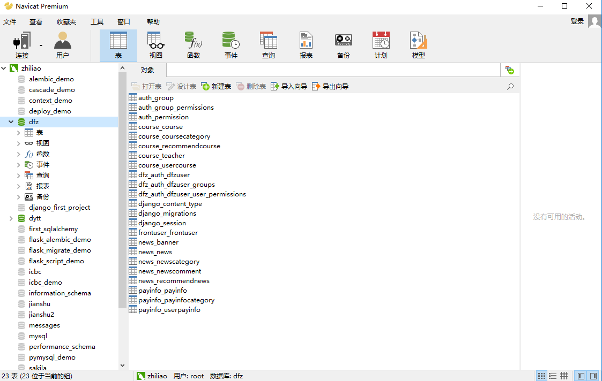

MySQL数据库
在网站开发中，数据库是网站的重要组成部分。只有提供数据库，数据才能够动态的展示，而不是在网页中显示一个静态的页面。数据库有很多，比如有SQL Server、Oracle、PostgreSQL以及MySQL等等。MySQL由于价格实惠、简单易用、不受平台限制、灵活度高等特性，目前已经取得了绝大多数的市场份额。因此我们在Django中，也是使用MySQL来作为数据存储。
MySQL数据库安装：
在
MySQL的官网下载MySQL数据库安装文件：https://dev.mysql.com/downloads/windows/installer/5.7.html。然后双击安装，如果出现以下错误，则到
http://www.microsoft.com/en-us/download/details.aspx?id=17113下载.net framework。
在安装过程中，如果提示没有
Microsoft C++ 2013，那么就到以下网址下载安装即可：http://download.microsoft.com/download/9/0/5/905DBD86-D1B8-4D4B-8A50-CB0E922017B9/vcredist_x64.exe。
接下来就是做好用户名和密码的配置即可。
navicat数据库操作软件：
安装完MySQL数据库以后，就可以使用MySQL提供的终端客户端软件来操作数据库。如下：
这个软件所有的操作都是基于sql语言，对于想要熟练sql语言的同学来讲是非常合适的。但是对于在企业中可能不是一款好用的工具。在企业中我们推荐使用mysql workbench以及navicat这种图形化操作的软件。而mysql workbench是mysql官方提供的一个免费的软件，正因为是免费，所以在一些功能上不及navicat。navicat for mysql是一款收费的软件。官网地址如下：https://www.navicat.com.cn/products。使用的截图如下：

MySQL驱动程序安装：
我们使用Django来操作MySQL，实际上底层还是通过Python来操作的。因此我们想要用Django来操作MySQL，首先还是需要安装一个驱动程序。在Python3中，驱动程序有多种选择。比如有pymysql以及mysqlclient等。这里我们就使用mysqlclient来操作。mysqlclient安装非常简单。只需要通过pip install mysqlclient即可安装。
常见MySQL驱动介绍：
MySQL-python：也就是MySQLdb。是对C语言操作MySQL数据库的一个简单封装。遵循了Python DB API v2。但是只支持Python2，目前还不支持Python3。mysqlclient：是MySQL-python的另外一个分支。支持Python3并且修复了一些bug。pymysql：纯Python实现的一个驱动。因为是纯Python编写的，因此执行效率不如MySQL-python。并且也因为是纯Python编写的，因此可以和Python代码无缝衔接。MySQL Connector/Python：MySQL官方推出的使用纯Python连接MySQL的驱动。因为是纯Python开发的。效率不高。